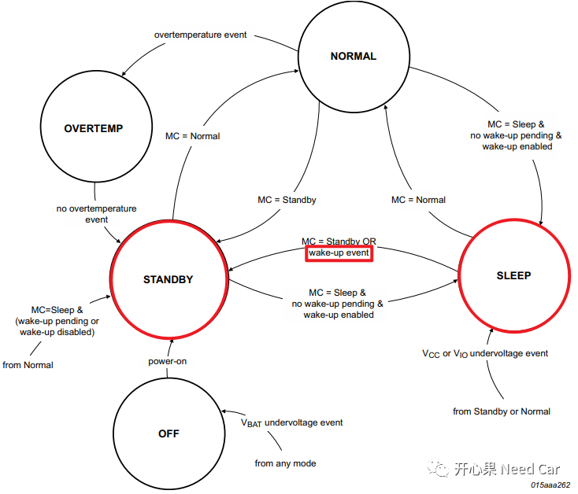
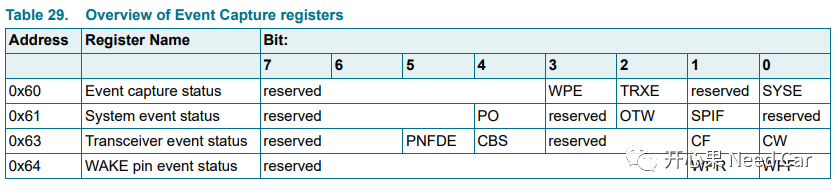
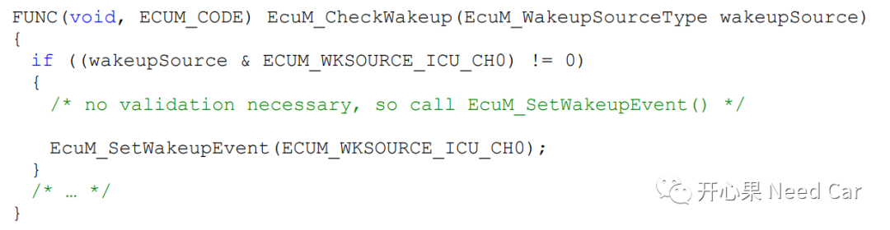
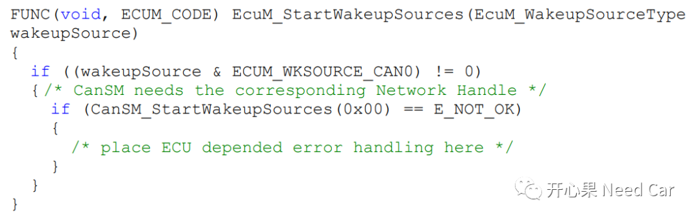

工程项目中，有些问题与ECU的上电时序相关，如果不清楚ECU的唤醒时序，那么网络唤醒也会迷迷糊糊，查问题根本抓不住重点。举个例子，项目中一般会有这样的需求：节点外发第一帧网络管理报文时间必须＜Twakeup_start（比如：150ms）。如果不清楚ECU的上电时序，通信栈的打开顺序，此类问题怎么查？
关于如何优化ECU的启动时间，前面结合工程具体问题聊过，可以回顾前文Autosar网络管理:优化ECU启动时间切入点。
本文以Can总线为切入点，聊一下Can的唤醒时序问题。本文主要讲解Transceiver和Controller的唤醒时机，因为只有Transceiver和Controller这两个硬件均进入正常的工作状态，收/发报文才能成为可能。
提示：基于NXP TJA1145讨论
Transceiver和Controller的唤醒时序
还是前面强调的一个点：ECU唤醒是网络唤醒的必要不充分条件，即：ECU唤醒并不意味着网络能唤醒，而网络被唤醒说明ECU一定先被唤醒了。具体的可以参考前文Autosar网络管理：你知道ECU如何被供电的吗？。
当Can总线有一帧报文到来时，不管是否是网络管理报文，或者只是一个干扰（符合Transceiver的wake-up pattern），Transceiver即可由Sleep Mode切换到Standby Mode，进而给Transceiver和主芯片供电(前面已经具体解释过)。Transceiver状态切换如下所示，而任意一帧报文或是总线干扰就是这里的“wake-up event”。

你可能注意到，刚才说：Transceiver由Sleep Mode切换到Standby Mode。为什么不是Off Mode切换到Standby Mode?一般的设计中，Transceiver常与KL30电连接，即连着蓄电池，就是说Transceiver是常供电的，所以，Transceiver几乎不会切换到Off Mode。之所以从Sleep Mode切换到Standby Mode，是因为在ECU下电时，会通过SPI指令将Transceiver由Normal Mode切到Sleep Mode。
注意：本文不讨论使用TJA1145 Transceiver过滤功能的情况。如果使用其过滤功能，可以通过过滤CANID，让指定的报文唤醒TJA1145 Transceiver，进而给Transceiver和主芯片供电。Can总线可以收/发报文必须建立在Transceiver和Controller都进入正常的工作状态，只有这样才能谈第一帧网络管理报文外发的问题。
Transceiver和Controller进入各自的正常工作状态是指：Transceiver进入Normal Mode，Controller进入Started Mode。
1、Transceiver何时进入Normal Mode
当Transceiver进入Standby Mode时，Transceiver的INH Pin被拉低使能，3V和5V电源管理模块使能，主芯片上电。这意味着什么呢？即从此刻起，软件开始被执行，即从启动代码一步一步地执行到Application的main程序。在执行程序初始化的过程中，执行到Transceiver的初始化程序时，可以通过SPI指令获取ECU唤醒的原因，且在此时会通过SPI指令让Transceiver进入Normal Mode，这就是Transceiver进入Normal Mode的时机。因为本文讨论的Transceiver是NXP TJA1145，因此，在初始化的流程中，需要确保SPI的初始化在Transceiver前面，不然无法通过SPI获取NXP TJA1145的信息，也无法发送SPI指令。提示：NXP TJA1145通过SPI控制状态转移。
个人理解，Controller是Autosar对Can驱动模块的抽象名称，因为使用的芯片不同，对应Can驱动模块的模式叫法也不同。Controller由CanIf模块直接操作，对应的模式如下所示：
typedef enum { CANIF_CS_UNINIT = 0u, CANIF_CS_STOPPED, CANIF_CS_STARTED, CANIF_CS_SLEEP} CanIf_ControllerModeType;
举例：Infineon-AURIX中，MCMCAN的模式有：Normal Operation、CAN FD Operation、Restricted Operation Mode、Power Down (Sleep Mode)、Bus Monitoring Mode等。MCMCAN的Normal Operation对应CanIf的CANIF_CS_STARTED，Restricted Operation Mode对应CANIF_CS_SLEEP，Sleep Mode对应CANIF_CS_STOPPED。其他的芯片，如：瑞萨等，大家可以自行去对应。
3、Controller何时进入Started Mode
当Transceiver初始化的时候，通过SPI指令读取对应Transceiver的状态寄存器即可获取唤醒的原因，即获取ECU唤醒的原因。在Autosar里，将Transceiver称为WakeupSources，当然WakeupSources可以有多个，最多32个。
现在，Transceiver已经进入了Normal Mode，就等Controller进入Started Mode了，否则还是不能将Transceiver接收的报文传给Controller，也就无法验证唤醒源的有效性，就更别提使能网络管理了。
既然Transceiver知道是什么原因唤醒的ECU（有对应的寄存器存储唤醒事件状态，如下所示），那么Transceiver就得有义务将唤醒ECU的原因告诉相关模块。

Transceiver告诉谁比较合适呢？EcuM模块。那怎么告诉EcuM呢？告诉EcuM唤醒事件之前，需要先确认唤醒源的真实性，即EcuM是否配置了这个唤醒源，实质就是调用接口EcuM_CheckWakeup()，让EcuM去识别这个唤醒事件是不是你配置的。但是EcuM只是管这个事，具体的验证还需要“底层人民”帮其验证，也就是Transceiver或者Controller。既然验证就一层一层来吧，EcuM_CheckWakeup()->CanIf_CheckWakeup()->CanTrcv_XX_CheckWakeup()/CanController_CheckWakeup()。CanTrcv_XX_CheckWakeup()/CanController_CheckWakeup()接口属于驱动接口，需要根据实际的项目适配，即该接口是非标的。如果唤醒事件的检查有效，那就需要上报该事件了。通过EcuM_SetWakeupEvent()这个接口。这个接口就将唤醒事件挂起，实质就是设置一个全局变量的某个bit，前面说了，唤醒源最多可以设置32个，即用一个uint32的全局变量记录唤醒源，每个bit表示一个唤醒源。EcuM_SetWakeupEvent()接口调用以后，对应的唤醒事件被挂起，EcuM的main函数在下一次轮询中就能识别到唤醒事件，进而调用自己的Callout函数EcuM_StartWakeupSources() ，调用这个Callout干啥呢？就是想让Controller进入Started Mode。知道了最终的目的，但是也不能太急，Autosar是分层的，哪个模块干什么样的活是有分工的，不能越权。EcuM想切换Controller状态，需要调用CanSM_StartWakeupSources()接口，因为CanSM模块统筹Transceiver和Controller的状态管理，这里不是说不能直接调用CanIf模块去切换Transceiver和Controller的状态，而是让CanSM管更合适。说白了，按照Autosar的架构开发，就别穿插太多自己的想法。CanSM_StartWakeupSources()接口此时会调用CanIf_SetControllerMode()接口，让Controller进入Started Mode。但是这里有一个点需要注意：Controller必须由Stopped Mode切换到Started Mode。这意味着，需要调用两次CanIf_SetControllerMode()，切换两次Controller状态，即Stopped Mode切换到Started Mode。实际，CanSM_StartWakeupSources()接口不仅会调用CanIf_SetControllerMode()接口，还会调用CanIf_SetTrcvMode()接口。就是为确保Transceiver和Controller进入“Normal”工作状态。至此，Transceiver和Controller切换到了我们预期的工作状态，在此刻起，意味着通信栈具备了收/发报文的条件，但是至于何时才能发送报文到总线，还得取决于后续模式管控模块的Action。
这里需要注意，对于如下5种唤醒事件无需检查其有效性，可直接将唤醒事件挂起，等待EcuM的进一步处理：
> ECUM_WKSOURCE_INTERNAL_RESET > ECUM_WKSOURCE_INTERNAL_WDG > ECUM_WKSOURCE_EXTERNAL_WDG EcuM_StartWakeupSources()示例

本文我们先聊到这，说清楚通信栈的打开时序，涉及的东西很多，我这里先抛砖引玉。文中有些细节是没有展开聊的，比如：EcuM的上电时序？EcuM的main函数被周期性调度意味着OS已经启动，此时EcuM在何种状态？唤醒事件的有效性验证如何处理的？后面再聊，太长了你就困了。
AUTOSAR_SWS_ECUStateManager.pdfAUTOSAR_SWS_CANInterface.pdfTJA1145 High-speed CAN transceiver for partial networking.pdfInfineon-AURIX_TC3xx_Part2-UserManual-v01_00-EN.pdfMICROSAR CAN Transceiver driver Technical Reference.pdf